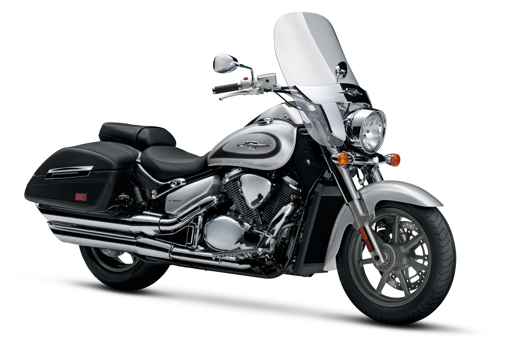
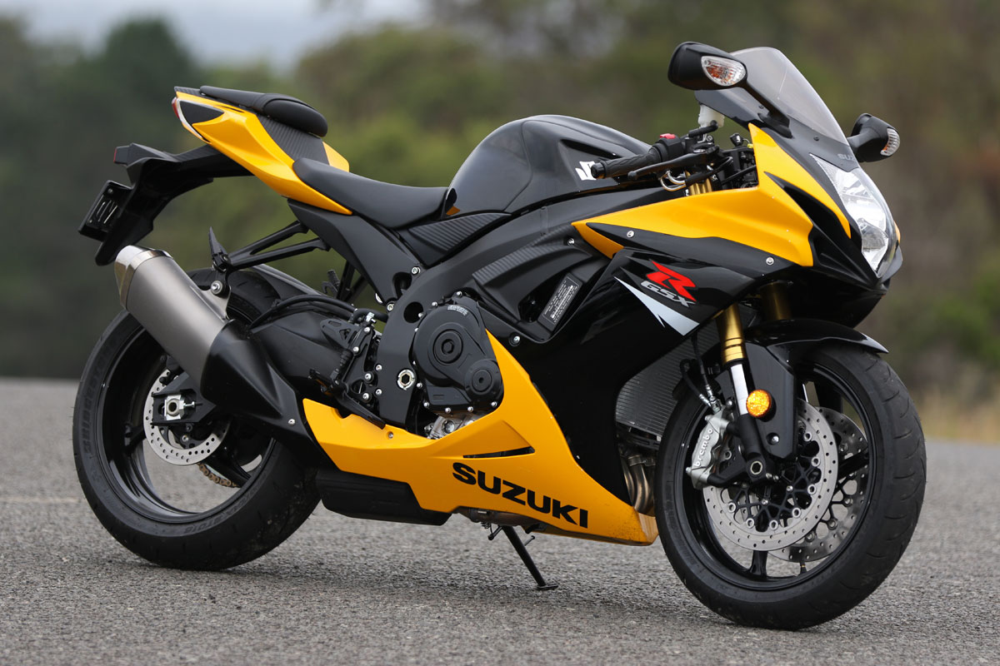

The Suzuki SV650
The Suzuki SV650 is another of those Suzuki bikes that have been instantly liked by all. This easy machine with its middleweight reliable feel is popular with all riders.
$7196.143Order Now

Order Now
The Suzuki Boulevard
The Suzuki Boulevard C90 is one engine that is loved by all Suzuki fanatics. This long machine with low-level, but stylish looks is a great cruiser.
$8609Order Now

Order Now
The Suzuki GSX-R750
One of the most recognizable Suzuki motorcycles that have been around for many years, the GSX-R750 is a pride to own.
$12599Order Now